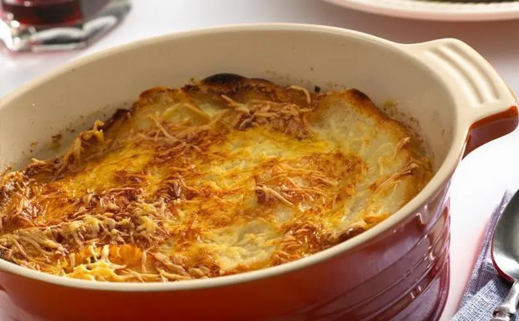

Sopa de cebolla

Ingredientes
Principal
- Cebolla
- Caldo de carne
- Pan
- Queso rallado
Preparación
- Fría las cebollas en mantequilla hasta dorarlas.
- Agregue el caldo y cocina por 30 minutos.
- Sirve con pan tostado y queso rallado.
Dificultad:mediaCocina:francesaVegetariana:síCelíacos:noAnticáncer:no
‚úîüç≥üå±
Autor:Anónimo